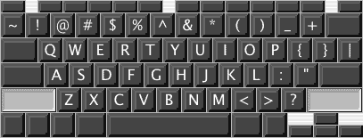
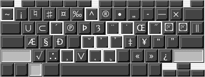
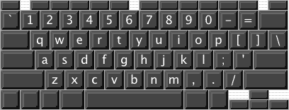
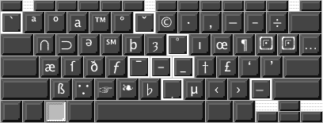

Universal Keyboard Layout
This is an attempt to design a keyboard layout that works well for any language based on the latin character set. Here is a list of the known supported languages. If you know of any that are missing, or if I have missed some character for one of the listed languages, please let me know.
- Albanian
- Bahasa Indonesia, Basque, Bikol, Breton
- Catalan, Cebuano, Croatian, Czech
- Danish, Dutch
- English, Esperanto, Estonian
- Faroese, Fijian, Finnish, Flemish, French, Frisian
- Gaelic, German, Greenlandic
- Hiligaynon, Hungarian
- Icelandic, Ilocano, Italian
- Kurdish
- Latvian, Lithuanian
- Malay, Maldavian, Maltese, Maori
- Norwegian
- Polish, Portugese
- Romansch, Romany, Rumanian
- Same, Slovak, Slovene, Sorbian, Spanish, Swedish
- Tagalog, Tahitian, Turkish
- Vietnamese
- Welsh
- dozens of Native American languages
- 20+ African languages
- romanized forms of Arabic, Chinese, Greek, Hebrew, Hindi, Japanese, Pali, Persian, Sanskrit, and all the languages written in Cyrillic
The idea is to allow combining characters (and multiple combining characters) so that the keyboard only contains the “basic forms”. Thus any character with an umlaut is written by typing the umlaut, followed by the character. So, while the basic selection of no modifiers, shift, compose (option on Macs, possibly an alt key on PCs), and compose+shift allows for 188 characters, this layout provides well near a thousand. Hopefully in a way that makes them all relatively intuitive to figure out.
The following images show the keymappings as currently set up. They are taken from KeyCaps on OS X, a nice app that Apple provides with the OS. It can also be used to show the results of various combining diacriticals.
| option off | option on | |
|---|---|---|
| shift on |  |  |
| shift off |  |  |
Initially, I’d like to design a single Unicode layout based on the above design. Mac OS X, xmodmap (most Unix systems), and Windows should be supported immediately. After a complete Unicode layout is finished, proper subsets for all ISO-8859 sets should be added as well. This will also allow us to make layouts for older Mac versions.
One of the benefits of this system is that it allows more complex combinations, like ‘c’ with both an acute and cedilla (ḉ). You can also make more complex mathematical symbols, like ≅ and ∋, for example
I’ve made an effort to put characters in logical locations; paired characters (like open/close quotes) next to each other, and other such considerations.
I plan to add a list of fonts that contain all the glyphs listed, and their availability. Currently, I can’t find any fonts that contain the character “yogh”, necessary for the Lapp alphabet. Wait, I think I found one – Alphabetum. The site’s in German, which I can’t read as well as I used to, so I don’t know the details. Another font, Gentium has good coverage of most of the characters, even yogh, but the angle brackets and hollow square brackets are still missing.
If you have created, or know of any fonts that contain all of the listed characters, please let me know (pfeilgm@technomadic.org). Also, let me know if they are free or not. Free fonts that meet this criteria will also be mentioned on The Typographic Web. Thanks.
There is also a mailing list for discussion of the keyboard layout, anyone interested in participating, or even just listening in, is welcome to join:
- To subscribe, send a blank message to: universalkeyboard-subscribe@technomadic.org
- To talk, send a message to: universalkeyboard@technomadic.org
- To unsubscribe, send a blank message to: universalkeyboard-unsubscribe@technomadic.org